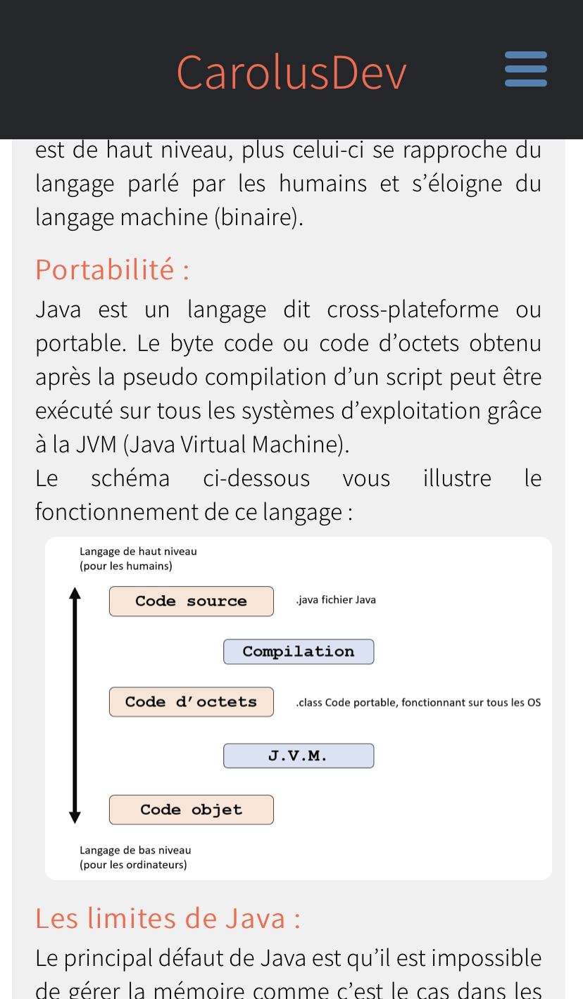

Rapport de stage 2020-2021 CarolusDev :
Introduction
Du premier juin au onze juillet 2021, j’ai effectué un stage au sein de mon entreprise créée récemment. CarolusDev est une entreprise de création de sites vitrine ainsi que de formation sur le développement informatique. Au cours de ce stage, j’ai pu m’intéresser au développement web avec l’utilisation des langages HTML et CSS ainsi qu’au développement logiciel en rédigeant des cours sur le langage Java, JavaFX et JavaSwing. Plus largement, ce stage a été une opportunité pour moi d’appréhender la création d’une microentreprise, la conception complète d’un site vitrine ainsi que l’écriture de cours sur des langages de programmations logiciel. Au-delà d’enrichir mes connaissances, ce stage m’a permis de comprendre dans quelle mesure créer sa propre entreprise pouvait être une expérience difficile mais épanouissante.
Ce rapport sera axé autour de la problématique suivante : Pourquoi et comment monter sa propre entreprise avant la fin de ses études ? Pour répondre à cette problématique, nous aborderons dans une première partie le sujet du secteur d’activité, dans une deuxième partie l’entreprise ainsi que le cadre du stage, puis nous terminerons par évoquer les travaux effectués durant le stage ainsi que ses apports personnels.
I. Le secteur d’activité
1. Le secteur économique des sites vitrine
Un site vitrine permet uniquement à une entreprise d’exposer son savoir-faire sur internet sans que le client puisse commander ou acheter via ce site. L’objectif est uniquement de promouvoir un bien ou un service, ce qui garantit aux entreprises l’obtention de nouveaux clients ou de nouveaux prospects grâce à certaines fonctionnalités du site. Il est par exemple possible de faire des demandes de devis, de contacter une entreprise, permettre le téléchargement de documents et bien évidemment de présenter ses activités.
Au quotidien nous effectuons des dizaines de recherches, naviguant de sites web en sites web. Beaucoup des sites que nous visitons sont des sites sur lesquels nous nous rendons pour la première fois. La richesse d’internet fait que nous découvrons chaque jour de nouveaux sites internet, de nouvelles entreprises, de nouveaux articles à lire… N’ayant pas trouvé de statistiques propres aux sites vitrine, intéressons-nous à la croissance d’internet en générale en matière de création de site web, et spécifiquement à l’évolution année par année du nombre de sites disponibles dans le monde.
l est difficile de réellement comptabiliser le nombre de sites internet en ligne, leur nombre ne cessant de croitre, passant de 250 millions de sites en 2009 à 1,84 milliards en 2021 (REF [1]). On estime que chaque seconde, ce-sont près de 3 sites qui sont mis en ligne sur l’internet mondial. Les sites les plus populaires sont bien évidement dans l’ordre : Google avec 4.4 milliards de recherches en juin 2021 suivi par Wikipédia avec 2.5 milliards et par Facebook et ses 2.4 milliards de recherches sur la même période (REF [3]). Ces chiffres (sources en fin de document) permettent d’affirmer que le nombre de sites internet en ligne ne cesse de croitre depuis les années 2000.
De plus, la pandémie de Covid-19 à rendu quasi obligatoire la présence en ligne des entreprises, même des plus petites. Des pays comme la France ont également profité de la crise pour ajouter à leur plan de relance économique des aides à la digitalisation des petites entreprises. En ce moment, toute entreprise de moins de 11 salariés, ayant un chiffre d’affaires inférieur à 2 millions d’euros par an et exerçant une activité économique peut prétendre à une aide de 500 euros (si celle-ci a déjà investi un minimum de 430 euros dans sa digitalisation). Cette aide est principalement destinée aux artisans ou aux restaurateurs souhaitant faire connaitre leur activité au-delà de leur emplacement géographique grâce à un site vitrine. En effet, ces commerces n’ont en général pas besoin d’un site de e-commerce, d’autant plus qu’un site de e-commerce coute cher à la création et en maintenance. Le meilleur compromis est souvent le site vitrine. Car accessible à toutes les entreprises et demande peu de maintenance.
La demande de sites internet, notamment de sites vitrine ne cesse de croitre depuis les années 2000. Les évènements actuels ainsi que le nombre de sociétés restant à digitaliser laissent penser que le marché continuera d’évoluer et restera attractif encore de nombreuses années.
2. Le secteur économique des formations en ligne
L’e-learning est une méthode d’apprentissage fondée sur des ressources et contenus pédagogiques en ligne. Il existe trois catégories de cours en lignes :
- COOC : Corporate Open Online Courses, utilisé par les entreprises pour former les employés.
- SPOC : Small Private Online Courses, cours en libre accès payants, peut permettre l’obtention de certifications.
- MOOC : Massive Online Open Courses, cours en libre accès gratuits (parfois payants), peut permettre d’obtenir une certification.
Dans le monde, l’e-learning permet de démocratiser l’accès à la formation en permettant une certaine flexibilité de l’enseignement. Toute personne ayant un accès internet peut se former en ligne. Le marché de l’e-learning est en forte hausse, dans le monde on estime une croissance de 10.3% par an jusqu’en 2027 et de 15% en France (REF [5]). L’étude ci-dessous montre l’évolution du nombre d’étudiants américains en pourcentage entre 2012 et 2019 suivants des cours en ligne.
II. L’entreprise et cadre du stage
3. Création de l’entreprise
L’été de cette année 2021 était l’occasion de mettre en place un projet que j’avais depuis plus d’un an, créer ma propre entreprise dans le domaine du développement informatique. C’est durant ma deuxième année de cours à Ynov que j’ai décidé de lancer mon entreprise dans le domaine de l’e-learning et du développement web. L’objectif initial était uniquement de me faire un peu d’argent de poche durant mes études en vendant de simples sites vitrine.
J’ai donc commencé les démarches administratives en mai 2021 en demandant à l’URSSAF d’approuver mon projet. Une fois cette étape réalisée, j’ai pu demander une immatriculation au RCS que j’ai obtenu le 15 juin 2021.

4. L’avenir de l’entreprise
L’entreprise abandonnera la création de sites vitrine progressivement d’ici la fin de l’année 2024 pour se consacrer exclusivement à la formation en ligne. Faisant des études dans le développement logiciel, il y a de fortes chances pour que l’entreprise s’oriente dans cette même direction, si aucun collaborateur spécialisé dans le web n’est trouvé. Les cours ne seront plus uniquement proposés en version écrite, mais également sous forme de cours vidéo. Ces vidéos feront partie de formations payantes uniquement disponibles sur le site.
III. Les travaux effectués et les apports du stage
5. Les outils mis à ma disposition
Mon entreprise étant domicilié chez moi, j’ai pu profiter de locaux déjà existants ainsi que de mon propre matériel. J’avais donc mon propre bureau, un ordinateur fixe, un ordinateur portable ainsi que mon smartphone personnel.
6. Les missions du poste occupé
Mes missions principales durant ce stage étaient de concevoir le site CarolusDev ainsi que de rédiger des cours informatiques qui seront tous publiés progressivement. J’ai commencé avant la date officielle du stage par concevoir le site de l’entreprise qui hébergera tous les cours écris cette année. Tous les dimanches à partir du premier octobre, un article sera mis en ligne sur le site gratuitement afin de poursuivre la série de cours sur le langage Java déjà débutée en septembre 2020. Les cours Java présents sur le site ont été réécris et complétés pour faciliter leur compréhension et leur lisibilité, ceux seront les premiers articles publiés cette année. D’ici l’été 2022, les séries complètes sur le langage Java, JavaFX et JavaSwing seront publiées. L’année suivante, ce seront les cours du langage C++ et Python qui seront publiés. Les cours Java ont déjà été écris, les cours de C++ et Python seront rédigés courant 2021/2022.
’écriture des articles sur le langage Java a été particulièrement long et compliqué. En effet, des connaissances poussées sur le sujet sont requises pour enseigner un langage informatique et ses subtilités. C’est pour cela que j’ai commencé par lire des ouvrages sur le langage (REF [0]) en question avant de mettre en pratique mes connaissances acquises et de les synthétiser dans des cours.
Pour la création du site CarolusDev, je me suis principalement servi des cours de responsive Design de cette année. En effet, 65% des recherches effectuées sur Google en 2019 ont été faites sur des smartphones REF [4]. Il est donc primordial de concevoir un site fonctionnel et design sur petit écran avant de penser à le réaliser pour des écrans plus grands. D’autant plus que les moments où les personnes prennent le plus de temps pour lire des articles sont dans des lieux où seul le smartphone peut être utilisé, notamment dans les transports en commun.
7. Les tâches périphériques
Étant le seul et unique employé de ma société, je devais m’assurer à la fois de la création des biens vendus par mon entreprise mais également du fonctionnement de celle-ci. Une microentreprise a l’avantage d’être simple du point de vue administratif, cependant la création de celle-ci reste une tâche chronophage et laborieuse. Je n’ai donc pu me consacrer pleinement à mes missions principales qu’après la société créée.
J’ai recherché des clients en utilisant mon réseau de contacts ainsi qu’en postant une annonce sur le site Malt. Ce site qui permet aux clients de choisir un prestataire freelance adapté à leur besoin. J’ai été mis en relation avec trois potentiels clients grâce à ce site ainsi qu’une association. Je n’ai pas réalisé de site cet été pour une entreprise ou association tiers, mais il est probable que je réalise un site pour deux de mes clients d’ici le mois d’octobre.
8. Les apports du stage
Ce stage, par ces différentes tâches, m’a apporté davantage de confiance en moi. Je me rends plus facilement compte de ce qu’il est possible de faire lorsque l’on est son propre patron. Mais aussi des responsabilités et des moments de doutes lorsque tout ne se passe pas comme on le voudrait. Monter mon entreprise m’a finalement permis d’avoir une première expérience avec l’entreprenariat, ce qui me motive à aller plus loin en développant mon affaire.
La conception du site CarolusDev a aussi été une expérience enrichissante. En effet, depuis nos cours de responsive design, c’est la première fois que je réalise un site vitrine compatible smartphone seul. Il m’a fallu le penser pour qu’il soit le plus agréable à visiter possible, aussi bien sur ordinateur que sur smartphone, mais également trouver une solution pour l’héberger et bien évidement publier du contenu. Concernant les articles, ceux présents sur le site sont des articles issus de mon précédent site réalisé avec le CMS WordPress. Les articles qui seront publiés à partir d’octobre et qui ont été écris cet été, m’ont permis de faire le point sur mes connaissances, de réviser mes cours et d’apprendre de nouvelles choses.
Conclusion
Créer son entreprise durant ses études est vraiment une expérience très enrichissante, aussi bien sur le plan professionnel que personnel. Travailler seul à son compte permet de prendre pleinement conscience des responsabilités endossées. Quel que soit les résultats de l’entreprise, nous sommes la seule et unique personne responsable de son échec ou de son succès. Travailler seul permet de gagner en autonomie et en maturité, mais aussi de faire ses premiers pas dans le monde de l’entreprenariat et de l’administratif qui l’accompagne. Que l’on souhaite continuer après ses études travailler à son compte ou non, créer son entreprise reste une aventure passionnante dans laquelle on apprend toujours. Créer une microentreprise est également plus simple qu’en utilisant un autre statut. Il suffit de suivre les instructions données par le site de l’URSSAF Autoentrepreneur (REF [7]) et de faire de même sur le site infogreffe (REF [8]).
Télécharger et voir mon rapport de stage